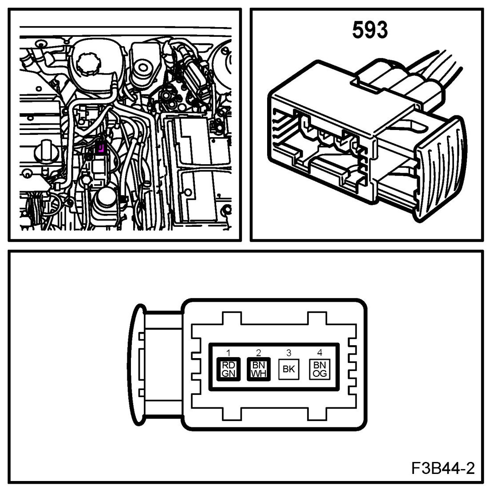
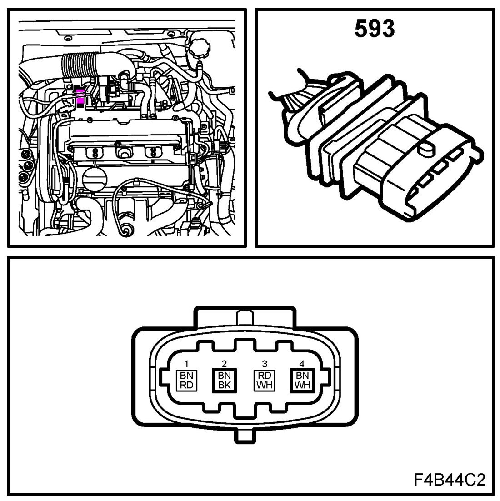
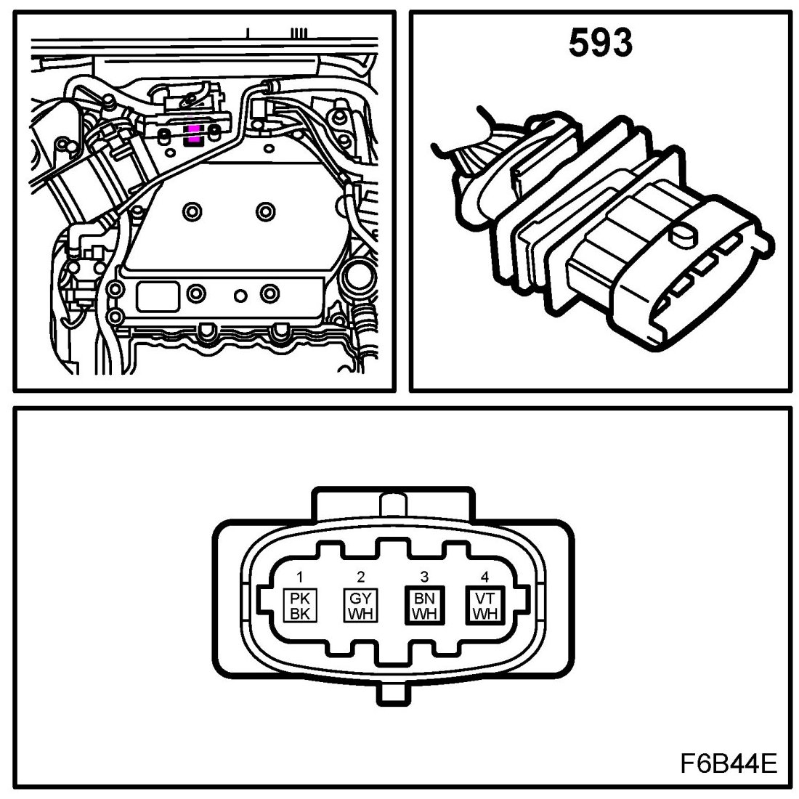

Rear Heated Oxygen Sensor (593)
Rear Heated Oxygen Sensor (593)
Location
B207
component: after the catalytic converter
connector: brown connector on the bracket between the power steering pump and the vacuum pump

Z18XE
on the exhaust pipe behind the engine
on a bracket at the rear centre of the engine

B284
component: after the catalytic converter
connector: below the engine control module
